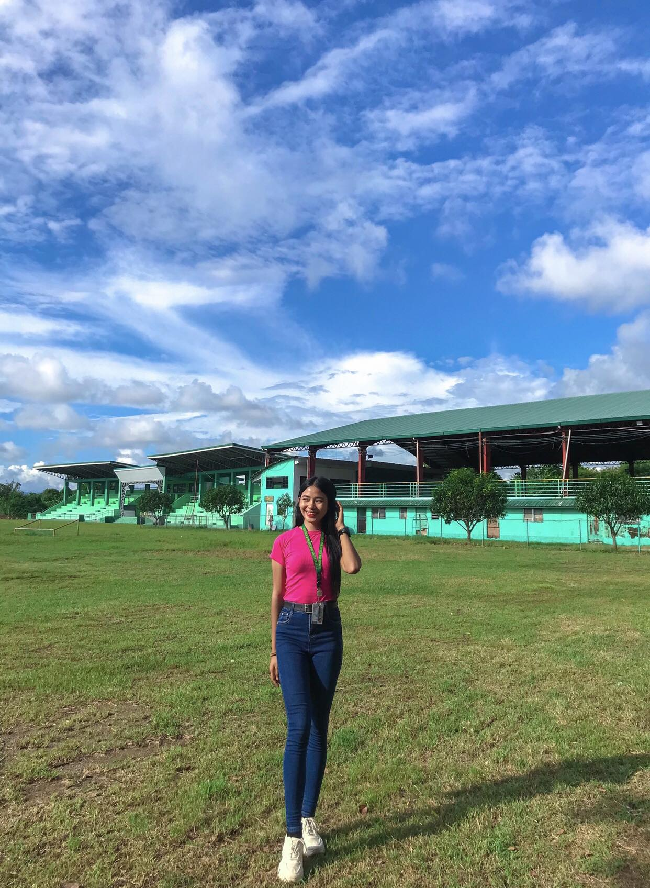
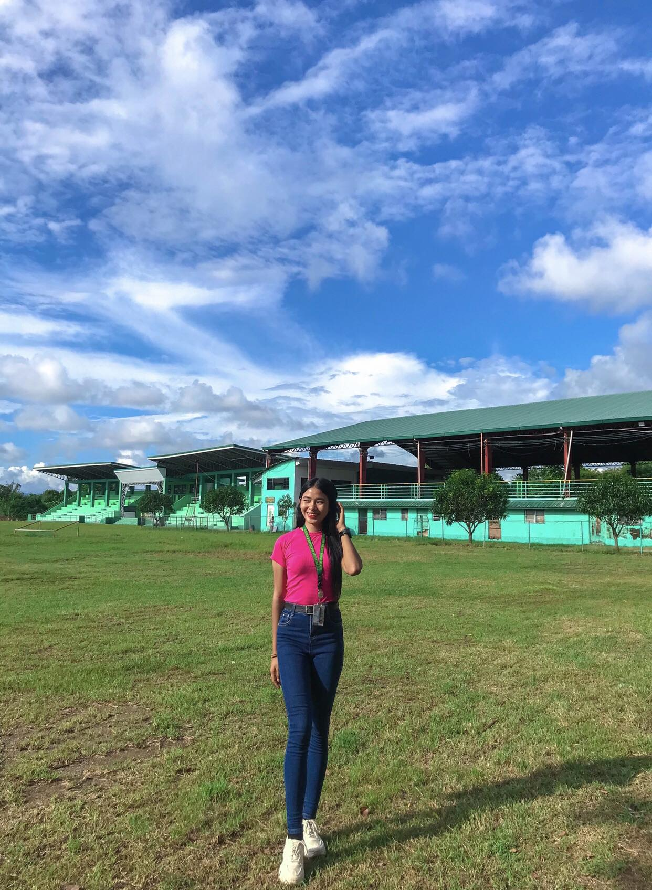

PROFILE
 Hello! My name is Krisalyn Domingo and I am 21 years old. From Kinabiti Pilar, Abra and I live in Lingsat Sta. Maria Ilocos Sur
 Hello! My name is Krisalyn Domingo and I am 21 years old. From Kinabiti Pilar, Abra and I live in Lingsat Sta. Maria Ilocos Sur